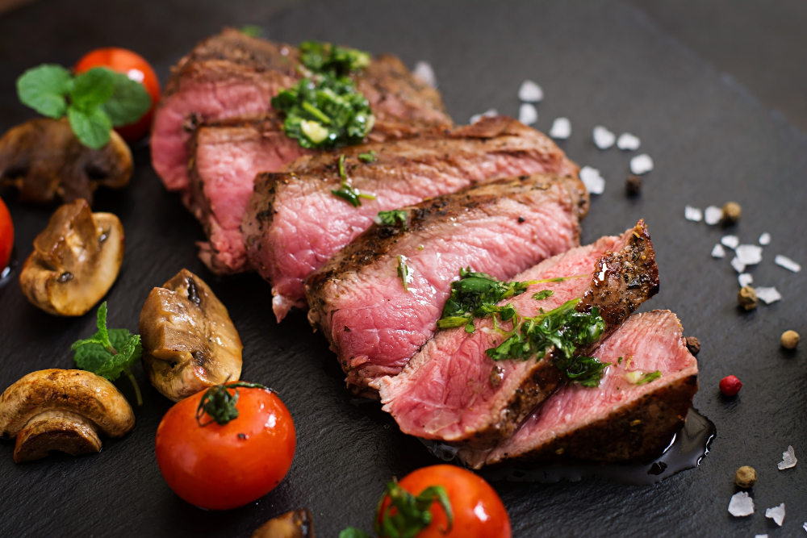

Greek Steak

Designed by Freepik
Description
This Greek steak marinade, with 3 ingredients and a little salt and pepper, is all you need for flavorful steaks you won't soon forget.
Ingredients
- 1/4 cup extra-virgin olive oil
- 2 tablespoons minced fresh oregano
- 2 tablespoons all-purpose Greek seasoning, (such as Cavender's®)
- 1/2 teaspoon salt
- 1/4 teaspoon freshly cracked black pepper
Steps
- Gather all ingredients.
- Whisk extra-virgin olive oil, oregano, Greek seasoning, salt, and pepper in a small bowl until smooth.
- Pour marinade over steaks, making sure to coat all sides. Cover and refrigerate for 4 hours.
Home